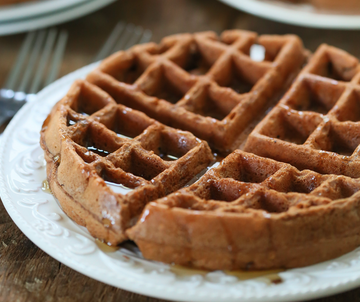

Waffles

Description
Waffles can be served for dessert or as a snack. Very simple and quick to make.
Ingredients
- 300g of Flour
- 75g of Sugar
- 2 eggs
- Baking powder (10g)
- 100g of Butter
- 0.5L of milk
Steps
- Mix the flour, sugar, eggs and butter
- Add the milk
- Add the baking powder
- Pour into the waffles maker